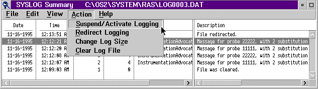

The Action choices from the SYSLOG Summary window are Suspend/Activate Logging, Redirect Logging, Change Log Size, and Clear Log File.
All the Action menu choices pertain to the actual collection of system
error information. For each action you take, the system records the action
in the appropriate error log.
Action Menu-Bar Choices on the SYSLOG Summary Window
